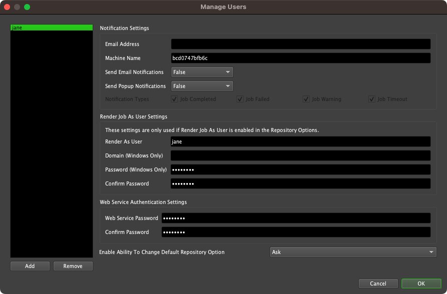
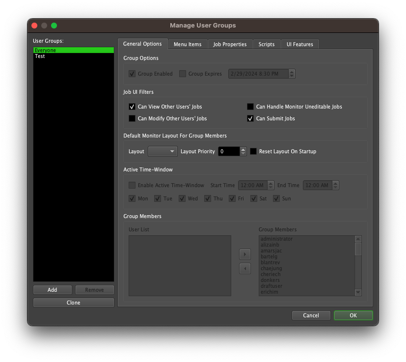

User Management¶
Overview¶
Deadline has its own user system, which is primarily used to tie users to Jobs. By default, in the Monitor, Users cannot see the options to control or modify the settings of another User’s Jobs.
Each user can configure their own user settings from the Monitor by selecting Tools -> Options. See the Monitor and User Settings documentation for more information on the available user settings.
Managing Users¶
Administrators can manage the all users from the Monitor. This is done by selecting Tools -> Manage Users in Power User mode, or as a user within an appropriate User Group. From here, you can add or remove individual users, and edit their user settings. See the Monitor and User Settings documentation for more information on the available user settings.
User Settings¶
User Settings can be configured in the Repository Configuration.
Note
Prior to Deadline 10.3.1, “User Settings” was referred to as “User Security”.
Warning
Power User mode can be enabled in the Monitor to display administrative features in the Deadline Monitor, however users can still call DeadlineCommand or APIs to use these administration features.
By default, Deadline does not enable Deadline User Switching. When this option is enabled, the Deadline Monitor runs with the System User as the Deadline User.
It is also recommended that you add a Power User password. When a password is set, the Monitor will require entering this password before Power User mode can be activated and display administration features (see below).
User Group¶
User Groups allow Administrators to adjust what functionality is visible to users in the Monitor.
Deadline automatically creates an ‘Everyone’ User Group, which always contains all Users, and cannot be removed or disabled. This User Group is also populated with the default settings recommended for normal users.
Managing User Groups¶
The User Group Management section can be opened as a Power User through the Tools -> Manage User Groups menu in the Monitor.
The left side of this dialog contains the list of User Groups that have already been created in the Repository. There are also controls allowing you to manipulate this list in many ways:
Add: Will create a new User Group using the default options and Feature Access Levels (equivalent to the default ‘Everyone’ group before modification).
Remove: Will delete the selected User Group from the Repository. Note that the ‘Everyone’ group can never be Removed in order to guarantee that all Users will at least be part of this group.
Clone: Will create a new User Group using the Options and Feature Access Levels of the currently selected group as defaults.
This list is visible regardless of which tab is selected, allowing you to quickly change which Group you’re modifying, and ensuring you’re always aware of which one is currently selected.
General Options¶
This tab contains basic higher-level settings for User Groups. Note that most of the features on this tab, described below, will be disabled when modifying the ‘Everyone’ group, since it is a special Group that must always be active and enabled for all Users.
- Group Options
Group Enabled: This indicates whether or not this User Group is currently active or not. This is always true for the ‘Everyone’ Group.
Group Expires: This setting will cause a Group to only be valid up to the specified Date and Time. This cannot be set for the ‘Everyone’ Group.
- Job UI Filters
Can View Other Users’ Jobs: This setting determines whether or not Users belonging to the Group can see other Users’ jobs in the Monitor.
Can Modify Other Users’ Jobs: This setting indicates whether or not Users in this Group can see the options to modify other users’ jobs (change properties, job state, etc) in the Monitor.
Can Handle Monitor Uneditable Jobs: This setting determines whether or not Users belonging to the Group can see the archive or delete actions in the Monitor to jobs that do not belong to them.
Can Submit Jobs: This setting determines whether or not Users belonging to the Group can submit jobs from the Monitor.
Default Monitor Layout: Here you can select a Monitor layout that was added to the Repository Configuration. This layout will act as the default for users belonging to this user group. The Priority setting is used as a tie breaker if a user is part of more than one group with a default layout. When a user selects View -> Reset Layout, it will reset to their user group’s default layout instead of the normal default. Finally, if the Reset Layout On Startup setting is enabled, the Monitor will always start up with that layout when it is launched.
Active Time-Window: This section allows you to set windows of time during which this Group is considered Active. This is useful if you want settings to change based on the time of day. This cannot be enabled for the ‘Everyone’ Group.
Group Members: This is where you control which Users are considered members of the currently selected Group. Users can be part of multiple Groups. All Users are always part of the ‘Everyone’ Group, and this cannot be changed.
Note
Prior to Deadline 10.3.1, “Job UI Filters” was referred to as “Job Access Level”, and “Active Time-Window” was referred to as “Time-Restricted Access”.
Controlling Feature Visibility¶
The other tabs in the Group Management dialog are dedicated to showing Features in the Monitor on a per-group basis.
Note
Prior to Deadline 10.3.1, this section was referred to as “Controlling Feature Access”.
Each tab groups displays a different type of Feature, that represent different aspects of the end-user experience:
Menu Items: This tab contains all the Menu Item features, including the main menu bar, right-click menus, and toolbar items.
Job Properties: This tab contains all of a Job’s modifiable properties. Note that this is only visible for Jobs a User is allowed to modify.
Scripts: This contains all the different type of scripts a User could run from the Monitor. This section dynamically generated based on which Scripts are currently in the Repository. Note that all scripts will default to a value of ‘Inherited’, so make sure to revisit this screen when adding new scripts to your Repository.
UI Features: This tab contains all the different types of Panels that a User can spawn in the Monitor, and controls whether or not a particular User Group is allowed to spawn them.
These Features are also grouped further within each tab into logical categories, to try and make maintenance easier.

There are three possible options that you can specify for each Feature:
Visible: The members of this Group will be able to see this Feature in the Monitor.
Hidden: The members of this Group will not be able to see this Feature in this Monitor. Note, however, that Users in this Group might be see this Feature via their membership in a different User Group.
Inherited: Whether or not this Feature is ‘Visible’ or ‘Hidden’ is deferred to the Feature’s Parent Category. Its current inherited value is reflected in the coloured square next to the dropdown; Red indicates it is currently Hidden, while Green indicates it is currently Visible. Top-level Parents in a category cannot be set to ‘Inherited’.
Note
Prior to Deadline 10.3.1, “Visible” and “Hidden” were referred to as “Enabled” and “Disabled”.
If Users are part of multiple Groups, they will always use the least-restrictive option for a particular Feature. In other words, a given User will have visibility of a Feature as long as they are part of at least one active Group that has visibility of that Feature, regardless of whether or not their other Groups allow it.

{kind=link}
{kind=link}
{kind=link}